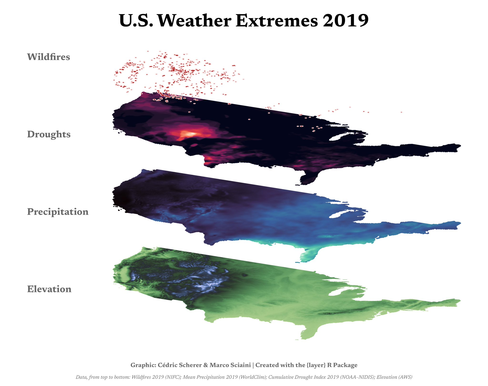
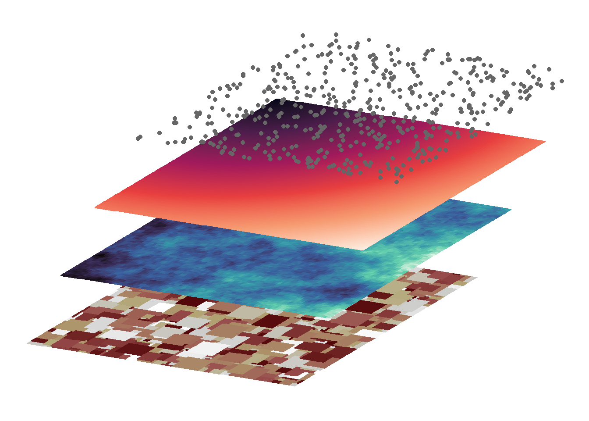
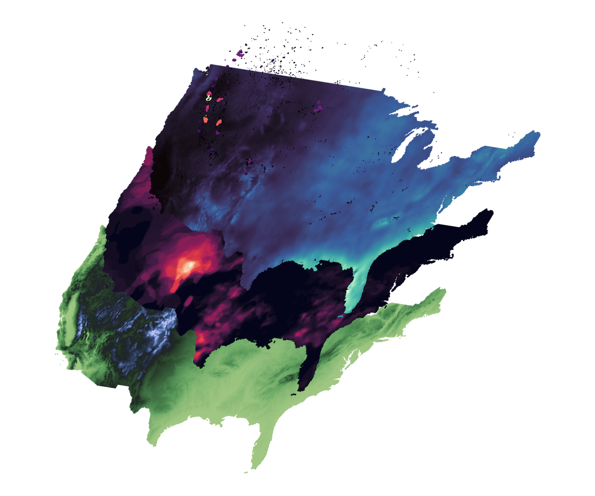

The goal of layer is to simplify the whole process of creating stacked tilted maps, that are often used in scientific publications to show different environmental layers for a geographical region. Tilting maps and layering them allows to easily draw visual correlations between these environmental layers.
Something in the line of:

Installation
You can install the development version of layer from GitHub with:
# install.packages("remotes")
remotes::install_github("marcosci/layer")Example
This is a basic example which shows you how to solve a common problem:
library(layer)
tilt_landscape_1 <- tilt_map(landscape_1)
tilt_landscape_2 <- tilt_map(landscape_2, x_shift = 25, y_shift = 50)
tilt_landscape_3 <- tilt_map(landscape_3, x_shift = 50, y_shift = 100)
tilt_landscape_points <- tilt_map(landscape_points, x_shift = 75, y_shift = 150)
map_list <- list(tilt_landscape_1, tilt_landscape_2, tilt_landscape_3, tilt_landscape_points)
plot_tiltedmaps(map_list,
layer = c("value", "value", "value", NA),
palette = c("bilbao", "mako", "rocket", NA),
color = "grey40")
More advanced example
Some more realistic looking data (DEM, drought, precipitation, and wildfires for continental USA):
tilt_landscape_1 <- tilt_map(dem_usa, y_tilt = 3)
tilt_landscape_2 <- tilt_map(drought_usa, y_tilt = 3, x_shift = 15, y_shift = 25)
tilt_landscape_3 <- tilt_map(prec_usa, y_tilt = 3, x_shift = 30, y_shift = 50)
tilt_landscape_4 <- tilt_map(fire_usa, y_tilt = 3, x_shift = 45, y_shift = 65)
map_list <- list(tilt_landscape_1, tilt_landscape_2, tilt_landscape_3, tilt_landscape_4)
plot_tiltedmaps(map_list, palette = c("tofino", "rocket", "mako", "magma"), direction = c(-1, 1, 1, 1))
Code of Conduct
Please note that the layer project is released with a Contributor Code of Conduct. By contributing to this project, you agree to abide by its terms.